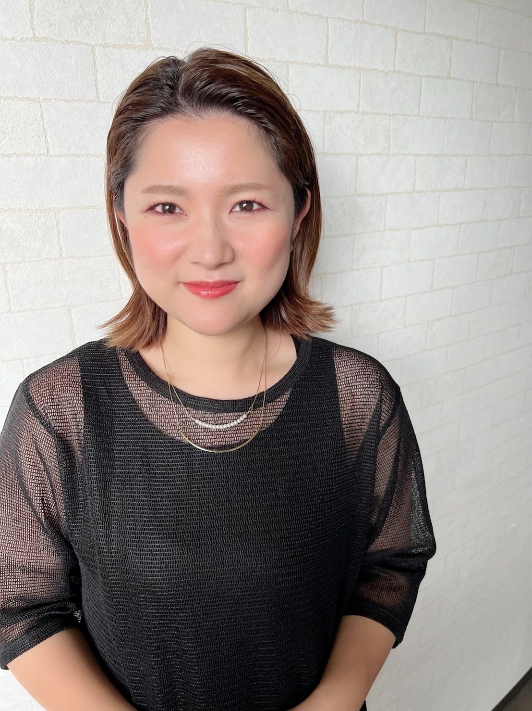
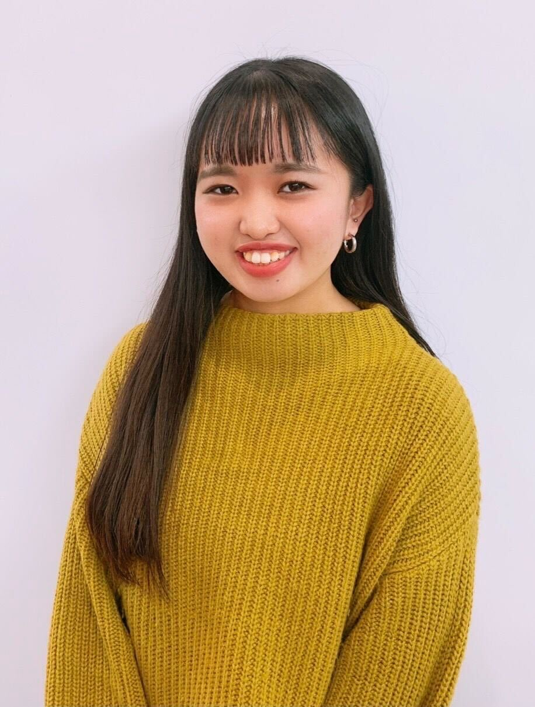

Recruiting stores
Worker
当店ではそれぞれのライフスタイルや理想の
ライフワークバランスに合わせて
“正社員”“時短社員”“パート”
の3つの働き方を選ぶ事が出来ます。
それぞれの働き方について
ご説明していきますね。
正社員
今より少しだけゆとりのある生活で
結婚、出産の準備期間に！
- 給与：永久最低保障給
25万円/月
＊研修中24万円となります。
＊売上60万円程度で最低保証を超えます。 - 休日：完全週休2日
＊予定がある際、日曜の休み希望も可能です。 - 勤務時間：8.5時間/1日
- 福利厚生：雇用保険 労災保険 社会保険 有給休暇あり
時短社員
妊娠中や子育て中、時間にゆとりを持って働きたい方。結婚や出産に向けてのんびり働きたい方。
- 給与：永久最低保障給
20～22万円/月
＊土日の勤務可能日数により上記内で変動します。
＊売上50万円程度で最低保証を超えます。 - 休日・勤務時間：
月10日休み1日6.5時間勤務
＊土日も気にせず自由にお休みして頂いて構いません。
＊時短社員さんに関しては個別で細かい条件設定も可能です。
＊まずはお気軽にご相談下さいませ。 - 福利厚生：雇用保険 労災保険 社会保険 有給休暇あり
パート
隙間時間に美容師のキャリアを
活かして働きたい方。また、産後の慣らし期間中なども！
- 時給：1200円～1500円
＊キャリアに応じて決定します。
＊上記に合わせ手当（指名数、売上等）もあります。 - 1日3時間以上で週に2回以上勤務出来ればOKです。
土日も気にせず自由にお休みして頂いて構いません。
週に25時間程度の勤務で社保加入希望の方はご相談下さい。
どの働き方でも共通しているのが
時間外のレッスンやミーティングがないという点になります。
だから正社員でも
通常の美容師と比べるとプライベートの
時間が確保しやすい環境です。
Point
担当客数が多くない。
1日の担当客数は正社員で３～４名。時短社員だと２～３名ですので体力的にも少し余裕が出来ます。メニューの単価を￥15,000に設定してますのでじっくり1人1人向き合って下さい。
新しい技術や知識の習得が少ない。
髪質改善はデザインに比べて変化や進化が少ないので1度習得すれば定期的なトレーニングや勉強は不要です。
勿論、新しいやり方や薬剤が出る事はありますがその際は営業中に時間を確保して落とし込みをします。
カットやカラーの様に習得に時間もかからないのでご安心下さい。
手厚い産休、育休制度。
産前休業として出産予定日42日前＋産後休業として産後56日間に合わせ、育児休業として1年間(状況により最長2年まで延長可)取得できます。
上記に加え、復帰後の福利厚生としてお子様が3才になるまでは、法定有給休暇とは別にお子様の体調不良による早退やお休みは、減給無しの特別育児休暇として年に10回まで認めております。
急な休みや早退などに対応しやすい。
当店の施術は【マニュアル】がベースになっている為、誰が施術しても同じ艶髪を作れるのが特徴です。
つまりスタッフの急な休みにも他のスタッフが対応出来るという事です。カットやカラー等、デザインだとそうゆう訳にいかない事も多いですからね。急な休みで気を遣うのは人として大切ですがそれ以上に重荷に感じる必要はありませんよ。
‘お互い様’その気持ちを大切にしているお店です。
Voice
鳩山宮子
元々2年ほどアシスタントをしてからブライダルのヘアメイクを10年くらいしてました。コロナや子育ての関係で一般企業に転職。
しかし、直接お客様に携われる美容師の魅力が忘れられず、再度、美容師に復帰をしました。
復帰の時点で美容師は10何年かぶりでとても不安でしたが技術のマニュアルに加え、トークマニュアルもしっかりとあったのでそれに沿ってトレーニングを行い、半年で入客させていただけるようになりました。
子供の発熱などでたまに急なお休みを頂く事もありますがスタッフみんなが本当に優しいのでお願いもしやすいです。プライベートを優先させてもらいつつも良い環境で美容師をさせて頂き感謝です。

久保山 友奈
以前のサロンは社保もなくお給料的にも満足出来ていなかったので
転職を検討していましたがカットが苦手だった為に転職に不安がありました。
たまたまこちらのサロンの求人を見ていてカットが苦手でも大丈夫という点と最低保証給など雇用環境がしっかりしているという事で思い切って転職を決意しました。
実際に働いてみてカットが苦手でもたくさんの方に喜んでもらえるという事を実感しています。
通常のサロンより時間的な拘束もかなり少ないし、有給も取りやすい環境なので以前より自由な時間も増えました。
先輩のママさん美容師を見ていて、結婚や出産後も美容師を続けられるイメージが沸くので将来も安心です。

QFA
- Q1
- 髪質改善はやったことがないので自信が無いです。
ほとんどのスタッフが髪質改善未経験者で入社しております。
遅い方でも４ヵ月ほどあれば問題なく入客出来るようになってますのでご安心下さい。
- Q2
- 単価が高すぎて不安です。
単価が高いのはお悩みを持ったお客様が多いからです。接客が難しいお客様が多い訳ではありませんよ。
低単価サロン出身のスタッフもいますのでご安心下さい。
- Q3
- ケミカルは苦手ですが大丈夫ですか？
技術も説明のトークも完全にマニュアル化してますので知識や技術に自信が無くても問題ありません。
- Q4
- どの位で入客出来ますか？
早い方で1か月、ブランクがある方で4か月程度で入客出来ています。
個人のご希望とマニュアルの習得度合をみて判断します。
- Q5
- 技術の習得に人より時間がかかるので心配です。
通常のサロンよりメニューを絞っているので習得すべき技術の幅は少ないです。
また研修期間は人によって変わっても良いと考えています。
研修後の期間の方が長くなるので研修期間中に不安点を全て解消しておくことが大事ですね。
- Q6
- カットは練習中ですが可能でしょうか？
モデルレッスンを始めている方は大歓迎です。ウィッグレッスンの段階の方は見学時にご相談下さい。
- Q7
- 顧客がいませんが大丈夫ですか？
当店はコンセプトを絞ったサロンになるのでむしろ顧客ゼロの方がやりやすいです。
- Q8
- 給与の内訳は？
基本給￥185,000＋技術歩合(10％)＋商品歩合(15％)＋指名料(100％)
＋指名数手当
(20名→￥5,000、
35名→￥15,000、
50名→￥25,000、
65名→￥40,000)
時短社員の場合は働ける時間により基本給が変動しますが内訳は同様です。
※ほとんどの方が入客から6ヵ月以内に最低保証給は超えてきます。
- Q9
- 賞与はありますか？
正社員、時短社員共に年に1回12月に支給です。
※金額は業績に応じて決定します。
- Q10
- 興味はあるけど住んでる場所が少し遠いです。
もしあなたが本気でしたら引っ越し費用を全額負担する事も考えます。
今、お困りの状況でしたら1度ご相談下さいませ。
- Q11
- 手荒れが心配です。
シャンプーはアミノ酸系シャンプーがメインですし、グローブシャンプーでも構いません。
また1日に担当する客数も少ないので一般的な美容室よりは軽減できる環境だと思います。
- Q12
- いつまで募集していますか？
現在、各店舗1名ずつのスタッフを募集してますが次の募集はいつになるか分かりません。
勤務開始が少し先になりそうな場合でもお早めにお問合せ下さい。
- Q13
- 店舗はどこにありますか？
現在、３店舗ございます。
・福岡美髪研究所Knops(地下鉄天神駅徒歩5分)
・髪質改善サロンBud(JR南福岡駅徒歩1分)
・髪質改善broto(地下鉄天神南駅徒歩4分)
全店舗、駅チカで便利な場所です。
- Q14
- 採用までの流れは？
サロン見学に来て頂いてお互いに問題がなければ面接を行います。
もちろん見学後に辞退して頂く事も可能です。
面接後10日以内に合否をお伝えします。遠方でサロン見学が難しい方などはご相談下さい。
まずはサロンにて見学を兼ねた
説明会を行っております。
【サロン見学希望】
と送って頂けたら
こちらからご返信させて頂きます。
サロン見学の前に
ご質問だけのメッセージでも大丈夫です。
以下のLINEからご連絡下さい。
※電話でのお問合せはご遠慮下さい。
最後に
美容師は続けていきたいけど結婚、出産などしても続けていけるかな～
産休、育休後に復帰してもアシスタントみたいになるのは嫌だな～
プライベートの時間を大事にしつつ美容師も楽しみたいな～
こんな風なお悩みはありませんか？
弊社サロンではプライベートの状況に合わせて
正社員→時短社員→パートと働き方を変えていく事を歓迎しております。
例えば、妊娠するまでは正社員で仕事を覚えながら少しだけ頑張る。
妊娠が発覚したら時短社員かパートに切り替えて体調最優先に。
育休明けはパートからすこしずつ復帰。。
子供が保育園に入るタイミングで時短社員に戻る。
子供が小学校高学年になるタイミングで正社員に。
体力的にきつくなってきたら時短社員に。
一例ですがこんな感じも可能です。
安心して働ける環境をご用意してお待ちしております。
ご質問だけも気軽にお問合せ下さいね！